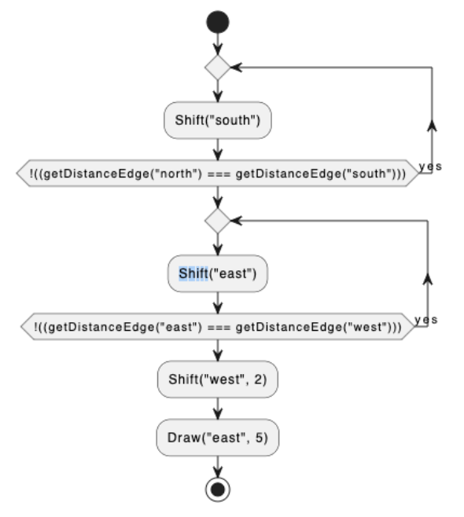
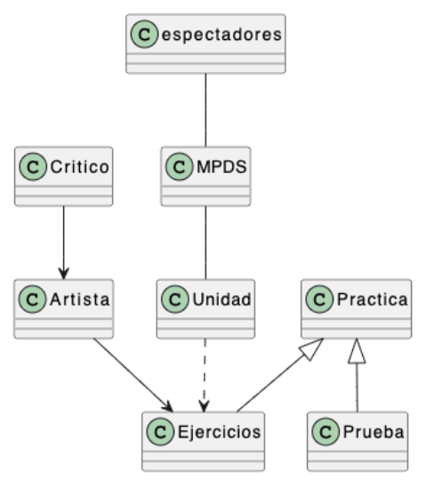
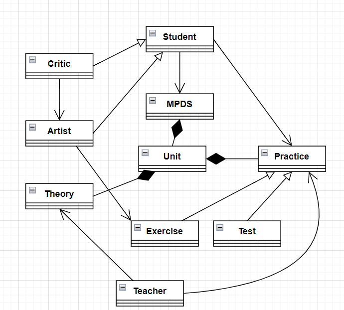

Ejercicio 1
Dado el siguiente diagrama, escribe el correspondiente texto para la herramienta Imperative Grid

Respuesta
[
DoWhile(
[
Shift("south"),
],
Not(
Equals(
GetDistanceEdge("north"),
GetDistanceEdge("south")))),
DoWhile(
[
Shift("east"),
],
Not(
Equals(
GetDistanceEdge("east"),
GetDistanceEdge("west")))),
Shift("west",3),
Draw("east",5),
]
Corrección
Escribe aquí la corrección
Ejercicio 2
Escribe la expresión correspondiente a la salida "suma" del circuito sumador total de dos bits del apartado Algebra de Boole del tema Conocimiento.
Respuesta
Suma === ~A & B & Cin | A & ~B & Cin | A & B
Corrección
Escribe aquí la corrección
Ejercicio 3
Propón un lenguaje de signos/símbolos, no hablado/escrito, que no sea el "semáforo" o el "policía de tráfico" y justifica tu respuesta.
Respuesta
Comunicación de jugadas entre los compañeros de un equipo por medio de señas, evitando que el rival pueda comprender el mensaje:
Consiste en una serie de señas ordenadas que especifican los movimientos y el orden de ejecución para cada jugador, por ejemplo en un saque de banda en rugby (touche).
Corrección
Escribe aquí la corrección
Ejercicio 4
Describe el triangulo de Tartaglia de forma recursiva.
Respuesta
Pirámide formada por números en posiciones intercaladas, cuyo valor es la suma de los dos números superiores de los que desciende.
Corrección
Escribe aquí la corrección
Ejercicio 5
Critica el siguiente diagrama.

Respuesta
- Reemplazaría "espectadores" por "alumnos".
- Pondría la asociación entre "espectadores" y "MPDS" unidireccional: los espectadores ven (reciben el contenido de) el MPDS.
- El MPDS contiene unidades, y unidades contienen prácticas, y las prácticas son pruebas y ejercicios.
- Añadiría "Teoría" al contenido de las unidades.
- Espectadores heredarían características de críticos y de artistas.
- Los nombres se escriben en inglés, con la primera letra mayúscula, y en singular.
- Asociaría a los alumnos con las prácticas, que son quienes las ejecutan.
- Añadiría "Teacher", que imparte la teoría la práctica.

Corrección
Escribe aquí la corrección